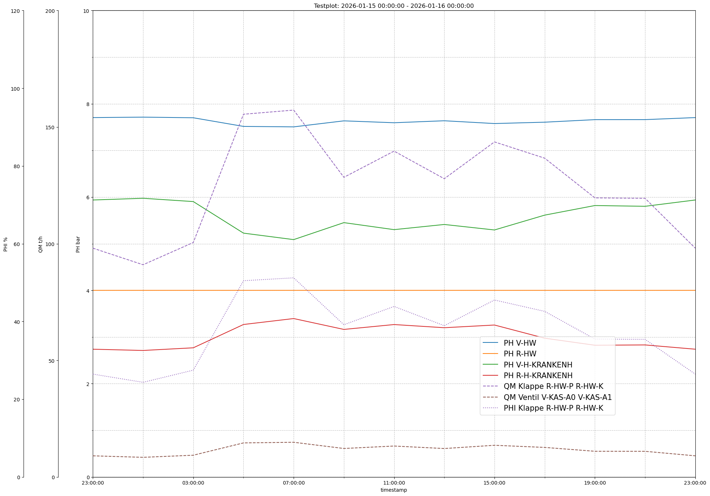

Tutorial 71: Time Curves
This example demonstrates how to obtain necessary data and plot time curves.
SIR 3S Installation
[1]:
SIR3S_SIRGRAF_DIR = r"C:\3S\SIR 3S\SirGraf-90-15-00-24_Quebec-Upd2" #change to local path
Imports
[2]:
from sir3stoolkit.core import wrapper
[3]:
from sir3stoolkit.mantle import mantle
The wrapper package has to be initialized with reference to a SIR 3S (SirGraf) installation.
[4]:
wrapper.Initialize_Toolkit(SIR3S_SIRGRAF_DIR)
[2026-11-25 16:27:08,441] INFO in sir3stoolkit.core.wrapper: [Initialization] Using provided SirGraf path: C:\3S\SIR 3S\SirGraf-90-15-00-24_Quebec-Upd2
[2026-11-25 16:27:08,441] INFO in sir3stoolkit.core.wrapper: [Initialization] Using provided SirGraf path: C:\3S\SIR 3S\SirGraf-90-15-00-24_Quebec-Upd2
[2026-11-25 16:27:08,470] INFO in sir3stoolkit.core.wrapper: [Initialization] Initializing toolkit with SirGraf path: C:\3S\SIR 3S\SirGraf-90-15-00-24_Quebec-Upd2
[2026-11-25 16:27:08,592] INFO in sir3stoolkit.core.wrapper: [Initialization] Sir3S_Toolkit.dll file version 90.15.11.0 (matches this sir3stoolkit version).
Additional imports
[5]:
import pandas as pd
…
Initialization
[6]:
s3s = mantle.SIR3S_Model_Mantle()
[2026-11-25 16:27:08,753] INFO in sir3stoolkit.core.wrapper: [Model Class Initialization] Initialization complete
Open Model
The tutorial uses Network 3, a fictional district heating network shared by the mantle tutorials: a heat plant (in its own container “Heizwerk”), about 180 consumers, a ring road and two longitudinal sections, calculated over one day. It is built from scratch with the SIR 3S Toolkit by Network3.py; Network3.db3 is included in the tutorial’s ZIP archive.
Its elements have unique ID references (IDREFERENZ), e.g. VL-HS-01 for the first supply pipe of the main street. They are used below to look up tks with GetTkFromIDReference() - the tks themselves differ between builds of the model.
[7]:
dbFilePath=r"Network3.db3"
[8]:
s3s.OpenModel(dbName=dbFilePath,
providerType=s3s.ProviderTypes.SQLite,
Mid="M-1-0-1",
saveCurrentlyOpenModel=False,
namedInstance="",
userID="",
password="")
[2026-11-25 16:27:13,921] INFO in sir3stoolkit.core.wrapper: Model is open for further operation
Calculate Model
[9]:
s3s.ExecCalculation(True) # To ensure result data
[2026-11-25 16:27:20,106] INFO in sir3stoolkit.core.wrapper: Model Calculation is complete
Obtain Data
[10]:
object_types = [item for item in dir(s3s.ObjectTypes) if not (item.startswith('__') and item.endswith('__'))]
print(object_types)
['AGSN_HydraulicProfile', 'AirVessel', 'Arrow', 'Atmosphere', 'BlockConnectionNode', 'CalcPari', 'CharacteristicLossTable', 'CharacteristicLossTable_Row', 'Circle', 'Compressor', 'CompressorTable', 'CompressorTable_Row', 'ControlEngineeringNexus', 'ControlMode', 'ControlPointTable', 'ControlPointTable_Row', 'ControlValve', 'ControlVariableConverter', 'ControlVariableConverterRSTE', 'CrossSectionTable', 'CrossSectionTable_Row', 'DPGR_DPKT_DatapointDpgrConnection', 'DPGR_DataPointGroup', 'DPKT_Datapoint', 'DamageRatesTable', 'DamageRatesTable_Row', 'DeadTimeElement', 'Demand', 'DifferentialRegulator', 'DirectionalArrow', 'DistrictHeatingConsumer', 'DistrictHeatingFeeder', 'Divider', 'DriveEfficiencyTable', 'DriveEfficiencyTable_Row', 'DrivePowerTable', 'DrivePowerTable_Row', 'EBES_FeederGroups', 'EfficiencyConverterTable', 'EfficiencyConverterTable_Row', 'ElementQuery', 'EnergyRecoveryTable', 'EnergyRecoveryTable_Row', 'EnvironmentTemp', 'FWBZ_DistrictHeatingReferenceValues', 'FlapValve', 'FlowControlUnit', 'FluidQualityParamSet', 'FluidQualityParamSet_OS', 'FluidThermalPropertyGroup', 'FreeDuct', 'FunctionGenerator', 'FunctionTable', 'FunctionTable_Row', 'GasComponent', 'GasMixture', 'GeneralSection', 'Gravitation', 'HeatExchanger', 'HeatFeederConsumerStation', 'HeaterCooler', 'Histeresis', 'House', 'Hydrant', 'Integrator', 'LAYR_Layer', 'LoadFactorTable', 'LoadFactorTable_Row', 'LogicalComparison', 'LogicalStorage', 'MeasuredVariableTable', 'MeasuredVariableTable_Row', 'MinMaxSelection', 'Multiplier', 'NetValve', 'Node', 'NonReturnValvesTable', 'NonReturnValvesTable_Row', 'NumericalDisplay', 'ObjectContainerSymbol', 'OpenContainer', 'Oval', 'PARZ_TransientCalculationParameters', 'PhaseSeparation', 'PidController', 'Pipe', 'PipeGroup', 'PipeTable', 'PipeTable_Row', 'PipeVertex', 'Polygon', 'Polyline', 'PressureRegulator', 'PressureZone', 'Pt1Controller', 'Pump', 'PumpCharTable', 'PumpCharTable_Row', 'PumpGroup', 'PumpOfPumpGroup', 'PumpSpeedTable', 'PumpSpeedTable_Row', 'RART_ControlMode', 'REGP_ControlParameters', 'RMES_DPTS_RmesInternalDataPoint', 'Rectangle', 'RegulatorsTable', 'RegulatorsTable_Row', 'ReturnTemperaturTable', 'ReturnTemperaturTable_Row', 'RoundRectangle', 'SIRGRAF', 'SPLZ_TimeSeries', 'SafetyValve', 'SetpointDevice', 'SolarCollector', 'StandPipe', 'Street', 'SummingPoint', 'SwitchInBlock', 'TemperatureTable', 'TemperatureTable_Row', 'Text', 'ThermalOutputTable', 'ThermalOutputTable_Row', 'ThermophysPropTable', 'ThermophysPropTable_Row', 'TransitionSymbol', 'Transmitter', 'TransportVariable', 'USCH_UserDefinedProperties', 'Unknown', 'VARA_ColorScale', 'VARA_ROWS_WidthOrScale', 'VRCT_ViewRectangle', 'Valve', 'ValveLiftTable', 'ValveLiftTable_Row', 'VarFlowTable', 'VarFlowTable_Row', 'VarPressureTable', 'VarPressureTable_Row', 'VentOpenCloseTable', 'VentOpenCloseTable_Row', 'VentValve', 'VentilatedPressureAirVessel', 'WBLZ_ThermalBalance', 'WeatherDataTable', 'WeatherDataTable_Row']
Nodes
[11]:
# supply and return of the heat plant and of the hospital (the end of the main street)
nodes_tks = [s3s.GetTkFromIDReference(id_ref, s3s.ObjectTypes.Node) for id_ref in ["V-HW", "R-HW", "V-H-KRANKENHAUS", "R-H-KRANKENHAUS"]]
[12]:
df_nodes_results = s3s.generate_element_results_dataframe(element_type=s3s.ObjectTypes.Node
,tks=nodes_tks
,properties=["PH"]
,timestamps=None # all available simulation timestamps will be used
)
[2026-11-25 16:27:20,177] INFO in sir3stoolkit.mantle.dataframes: [results] Generating results dataframe for element type: ObjectTypes.Node
[2026-11-25 16:27:20,619] INFO in sir3stoolkit.mantle.dataframes: [Resolving Timestamps] No timestamps were given. Checking available simulation timestamps (SIR3S_Model.GetTimeStamps()[0]).
[2026-11-25 16:27:20,623] INFO in sir3stoolkit.mantle.dataframes: [Resolving Timestamps] 13 simulation timestamp(s) are available.
[2026-11-25 16:27:20,624] INFO in sir3stoolkit.mantle.dataframes: [Resolving Timestamps] Using 13 timestamps: ['2026-01-15 00:00:00.000 +01:00', '2026-01-15 02:00:00.000 +01:00', '2026-01-15 04:00:00.000 +01:00', '2026-01-15 06:00:00.000 +01:00', '2026-01-15 08:00:00.000 +01:00', '2026-01-15 10:00:00.000 +01:00', '2026-01-15 12:00:00.000 +01:00', '2026-01-15 14:00:00.000 +01:00', '2026-01-15 16:00:00.000 +01:00', '2026-01-15 18:00:00.000 +01:00', '2026-01-15 20:00:00.000 +01:00', '2026-01-15 22:00:00.000 +01:00', '2026-01-16 00:00:00.000 +01:00']
[2026-11-25 16:27:20,632] INFO in sir3stoolkit.mantle.dataframes: [Resolving tks] Retrieved 592 element(s) of element type ObjectTypes.Node.
[2026-11-25 16:27:20,634] INFO in sir3stoolkit.mantle.dataframes: [Resolving tks] 4 tks remain after filtering for given tks.
[2026-11-25 16:27:20,679] INFO in sir3stoolkit.mantle.dataframes: [results] Using 1 result properties.
[2026-11-25 16:27:20,683] INFO in sir3stoolkit.mantle.dataframes: [results] 13 timestamp(s), 4 element(s), 1 property resolved (0.5 s).
[2026-11-25 16:27:20,686] INFO in sir3stoolkit.mantle.dataframes: [results] Retrieving result values... (bulk=False)
[2026-11-25 16:27:20,790] INFO in sir3stoolkit.mantle.dataframes: [results] 52 value(s) retrieved via GetResultfortimestamp() (0.1 s).
[2026-11-25 16:27:20,809] INFO in sir3stoolkit.mantle.dataframes: [results] 0 fully NaN columns dropped.
[2026-11-25 16:27:20,809] INFO in sir3stoolkit.mantle.dataframes: [results] DataFrame assembled (0.0 s).
[2026-11-25 16:27:20,843] INFO in sir3stoolkit.mantle.dataframes: [results] Names/end nodes of 4 element(s) looked up (0.0 s).
[2026-11-25 16:27:20,849] INFO in sir3stoolkit.mantle.dataframes: [results] Done. Shape: (13, 4) (0.7 s in total)
Vents
[13]:
vent_tks = [s3s.GetTkFromIDReference("KLAPPE-HW", s3s.ObjectTypes.FlapValve)] # non-return valve behind the network pumps
[14]:
df_vent_results = s3s.generate_element_results_dataframe(element_type=s3s.ObjectTypes.FlapValve
,tks=vent_tks
,properties=["PHI", "QM"]
,timestamps=None # all available simulation timestamps will be used
)
[2026-11-25 16:27:20,895] INFO in sir3stoolkit.mantle.dataframes: [results] Generating results dataframe for element type: ObjectTypes.FlapValve
[2026-11-25 16:27:21,192] INFO in sir3stoolkit.mantle.dataframes: [Resolving Timestamps] No timestamps were given. Checking available simulation timestamps (SIR3S_Model.GetTimeStamps()[0]).
[2026-11-25 16:27:21,195] INFO in sir3stoolkit.mantle.dataframes: [Resolving Timestamps] 13 simulation timestamp(s) are available.
[2026-11-25 16:27:21,200] INFO in sir3stoolkit.mantle.dataframes: [Resolving Timestamps] Using 13 timestamps: ['2026-01-15 00:00:00.000 +01:00', '2026-01-15 02:00:00.000 +01:00', '2026-01-15 04:00:00.000 +01:00', '2026-01-15 06:00:00.000 +01:00', '2026-01-15 08:00:00.000 +01:00', '2026-01-15 10:00:00.000 +01:00', '2026-01-15 12:00:00.000 +01:00', '2026-01-15 14:00:00.000 +01:00', '2026-01-15 16:00:00.000 +01:00', '2026-01-15 18:00:00.000 +01:00', '2026-01-15 20:00:00.000 +01:00', '2026-01-15 22:00:00.000 +01:00', '2026-01-16 00:00:00.000 +01:00']
[2026-11-25 16:27:21,203] INFO in sir3stoolkit.mantle.dataframes: [Resolving tks] Retrieved 1 element(s) of element type ObjectTypes.FlapValve.
[2026-11-25 16:27:21,207] INFO in sir3stoolkit.mantle.dataframes: [Resolving tks] 1 tks remain after filtering for given tks.
[2026-11-25 16:27:21,211] INFO in sir3stoolkit.mantle.dataframes: [results] Using 2 result properties.
[2026-11-25 16:27:21,211] INFO in sir3stoolkit.mantle.dataframes: [results] 13 timestamp(s), 1 element(s), 2 properties resolved (0.3 s).
[2026-11-25 16:27:21,211] INFO in sir3stoolkit.mantle.dataframes: [results] Retrieving result values... (bulk=False)
[2026-11-25 16:27:21,301] INFO in sir3stoolkit.mantle.dataframes: [results] 26 value(s) retrieved via GetResultfortimestamp() (0.1 s).
[2026-11-25 16:27:21,302] INFO in sir3stoolkit.mantle.dataframes: [results] 0 fully NaN columns dropped.
[2026-11-25 16:27:21,319] INFO in sir3stoolkit.mantle.dataframes: [results] DataFrame assembled (0.0 s).
[2026-11-25 16:27:21,326] INFO in sir3stoolkit.mantle.dataframes: [results] Names/end nodes of 1 element(s) looked up (0.0 s).
[2026-11-25 16:27:21,336] INFO in sir3stoolkit.mantle.dataframes: [results] Done. Shape: (13, 2) (0.4 s in total)
[15]:
df_vent_results.head(3)
[15]:
| tk | 4902425580532552737 | |
|---|---|---|
| name | Klappe R-HW-P R-HW-K | |
| end_nodes | ('5756931290248494597', '5450735918140770069', '-1', '-1') | |
| property | PHI | QM |
| timestamp | ||
| 2026-01-15 00:00:00.000 +01:00 | 26.459579 | 98.099777 |
| 2026-01-15 02:00:00.000 +01:00 | 24.348660 | 90.988617 |
| 2026-01-15 04:00:00.000 +01:00 | 27.474970 | 100.526802 |
Valves
[16]:
valves_tks = [s3s.GetTkFromIDReference("A-VL-KAS", s3s.ObjectTypes.Valve)] # shut-off valve Kastanienallee south, supply
[17]:
df_valves_results = s3s.generate_element_results_dataframe(element_type=s3s.ObjectTypes.Valve
,tks=valves_tks
,properties=["QM"]
,timestamps=None # all available simulation timestamps will be used
)
[2026-11-25 16:27:21,473] INFO in sir3stoolkit.mantle.dataframes: [results] Generating results dataframe for element type: ObjectTypes.Valve
[2026-11-25 16:27:21,682] INFO in sir3stoolkit.mantle.dataframes: [Resolving Timestamps] No timestamps were given. Checking available simulation timestamps (SIR3S_Model.GetTimeStamps()[0]).
[2026-11-25 16:27:21,682] INFO in sir3stoolkit.mantle.dataframes: [Resolving Timestamps] 13 simulation timestamp(s) are available.
[2026-11-25 16:27:21,682] INFO in sir3stoolkit.mantle.dataframes: [Resolving Timestamps] Using 13 timestamps: ['2026-01-15 00:00:00.000 +01:00', '2026-01-15 02:00:00.000 +01:00', '2026-01-15 04:00:00.000 +01:00', '2026-01-15 06:00:00.000 +01:00', '2026-01-15 08:00:00.000 +01:00', '2026-01-15 10:00:00.000 +01:00', '2026-01-15 12:00:00.000 +01:00', '2026-01-15 14:00:00.000 +01:00', '2026-01-15 16:00:00.000 +01:00', '2026-01-15 18:00:00.000 +01:00', '2026-01-15 20:00:00.000 +01:00', '2026-01-15 22:00:00.000 +01:00', '2026-01-16 00:00:00.000 +01:00']
[2026-11-25 16:27:21,682] INFO in sir3stoolkit.mantle.dataframes: [Resolving tks] Retrieved 24 element(s) of element type ObjectTypes.Valve.
[2026-11-25 16:27:21,691] INFO in sir3stoolkit.mantle.dataframes: [Resolving tks] 1 tks remain after filtering for given tks.
[2026-11-25 16:27:21,691] INFO in sir3stoolkit.mantle.dataframes: [results] Using 1 result properties.
[2026-11-25 16:27:21,698] INFO in sir3stoolkit.mantle.dataframes: [results] 13 timestamp(s), 1 element(s), 1 property resolved (0.2 s).
[2026-11-25 16:27:21,698] INFO in sir3stoolkit.mantle.dataframes: [results] Retrieving result values... (bulk=False)
[2026-11-25 16:27:21,761] INFO in sir3stoolkit.mantle.dataframes: [results] 13 value(s) retrieved via GetResultfortimestamp() (0.1 s).
[2026-11-25 16:27:21,771] INFO in sir3stoolkit.mantle.dataframes: [results] 0 fully NaN columns dropped.
[2026-11-25 16:27:21,777] INFO in sir3stoolkit.mantle.dataframes: [results] DataFrame assembled (0.0 s).
[2026-11-25 16:27:21,777] INFO in sir3stoolkit.mantle.dataframes: [results] Names/end nodes of 1 element(s) looked up (0.0 s).
[2026-11-25 16:27:21,786] INFO in sir3stoolkit.mantle.dataframes: [results] Done. Shape: (13, 1) (0.3 s in total)
[18]:
df_valves_results.head(3)
[18]:
| tk | 4966030677445777085 |
|---|---|
| name | Ventil V-KAS-A0 V-KAS-A1 |
| end_nodes | ('4766920490009518044', '5539861108537060317', '-1', '-1') |
| property | QM |
| timestamp | |
| 2026-01-15 00:00:00.000 +01:00 | 9.068021 |
| 2026-01-15 02:00:00.000 +01:00 | 8.425672 |
| 2026-01-15 04:00:00.000 +01:00 | 9.328013 |
Concat
[19]:
df_results = pd.concat([df_nodes_results, df_vent_results, df_valves_results], axis=1, join="inner")
[20]:
df_results.head(3)
[20]:
| tk | 4942640643723972374 | 5652926479743870945 | 5088746048196633749 | 5667917176928082313 | 4902425580532552737 | 4966030677445777085 | |
|---|---|---|---|---|---|---|---|
| name | V-HW | R-HW | V-H-KRANKENH | R-H-KRANKENH | Klappe R-HW-P R-HW-K | Ventil V-KAS-A0 V-KAS-A1 | |
| end_nodes | No end nodes on element type | No end nodes on element type | No end nodes on element type | No end nodes on element type | ('5756931290248494597', '5450735918140770069', '-1', '-1') | ('4766920490009518044', '5539861108537060317', '-1', '-1') | |
| property | PH | PH | PH | PH | PHI | QM | QM |
| timestamp | |||||||
| 2026-01-15 00:00:00.000 +01:00 | 7.703956 | 4.0 | 5.937380 | 2.738959 | 26.459579 | 98.099777 | 9.068021 |
| 2026-01-15 02:00:00.000 +01:00 | 7.713698 | 4.0 | 5.974027 | 2.711926 | 24.348660 | 90.988617 | 8.425672 |
| 2026-01-15 04:00:00.000 +01:00 | 7.700174 | 4.0 | 5.903639 | 2.769024 | 27.474970 | 100.526802 | 9.328013 |
Plot
[21]:
df_results.head(3)
[21]:
| tk | 4942640643723972374 | 5652926479743870945 | 5088746048196633749 | 5667917176928082313 | 4902425580532552737 | 4966030677445777085 | |
|---|---|---|---|---|---|---|---|
| name | V-HW | R-HW | V-H-KRANKENH | R-H-KRANKENH | Klappe R-HW-P R-HW-K | Ventil V-KAS-A0 V-KAS-A1 | |
| end_nodes | No end nodes on element type | No end nodes on element type | No end nodes on element type | No end nodes on element type | ('5756931290248494597', '5450735918140770069', '-1', '-1') | ('4766920490009518044', '5539861108537060317', '-1', '-1') | |
| property | PH | PH | PH | PH | PHI | QM | QM |
| timestamp | |||||||
| 2026-01-15 00:00:00.000 +01:00 | 7.703956 | 4.0 | 5.937380 | 2.738959 | 26.459579 | 98.099777 | 9.068021 |
| 2026-01-15 02:00:00.000 +01:00 | 7.713698 | 4.0 | 5.974027 | 2.711926 | 24.348660 | 90.988617 | 8.425672 |
| 2026-01-15 04:00:00.000 +01:00 | 7.700174 | 4.0 | 5.903639 | 2.769024 | 27.474970 | 100.526802 | 9.328013 |
[22]:
fig, axes, used = s3s.plot_time_curves(
df=df_results,
start="2026-01-15 00:00:00.000 +01:00",
end="2026-01-16 00:00:00.000 +01:00",
properties=["PH", "QM", "PHI"],
axis_labels=["PH bar", "QM t/h", "PHI %"],
ylims=[(0, 10), (0, 200), (0, 120)],
tks_per_property=[
nodes_tks,
vent_tks + valves_tks,
vent_tks,
],
y_label_ticks=[6, 5, 7],
y_grid_ticks=11,
x_label_ticks=7,
x_grid_ticks=13,
legend=True,
legend_in_figure=True,
legend_loc="upper left",
legend_coords=(0.67, 0.33),
legend_fontsize=15,
title_prefix="Testplot: ",
show_title=True,
axis_offset=70,
linestyles=["-", "--", ":"],
rotate_xticks=0,
grid=True,
grid_style="--",
grid_alpha=0.8,
missing="warn",
logger=None,
)
